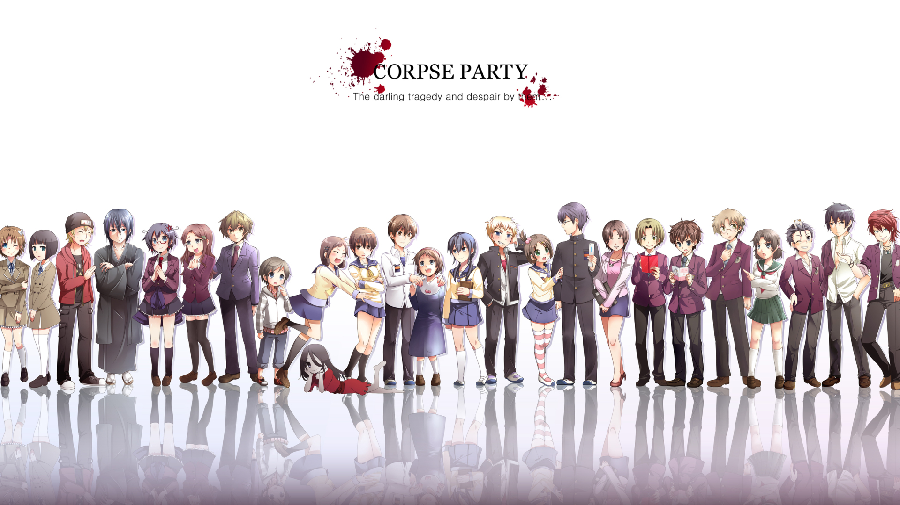

Corpse Party
Episode : 5
Price: 4$
Synopsis :
Corpse Party
Berkisah tentang drama dan kutukan yang menimpa sekelompok siswa dan siswi SMA.Kutukan itu bermula ketika Naomi Nakashima (Ikoma Rina), teman masa kecilnya Satoshi Mochida (Ryousuke Ikeoka), dan teman sekelas mereka membersihkan kelas setelah festival kebudayaan di sekolah.
Ayumi Shinozaki (Nozomi Maeda) yang merupakan penggemar horor memutuskan untuk melakukan ritual “Sachiko Selamanya” agar mereka bisa bersama untuk selamanya dan nggak terpisahkan. Apesnya ritual ini malah membawa mereka ke sebuah upacara wisuda angker di Sekolah Dasar Heavenly Host yang terpaksa ditutup setelah serangkaian pembunuhan mengerikan.